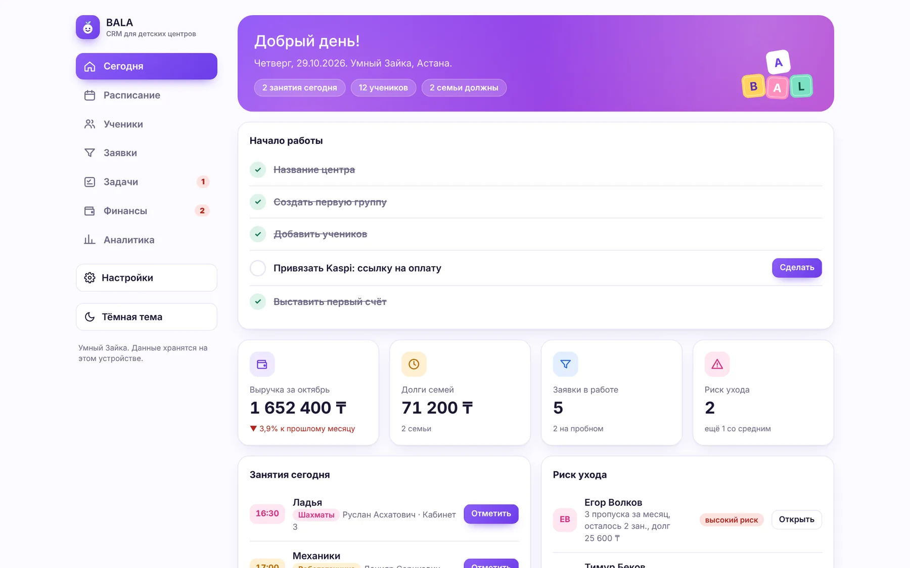
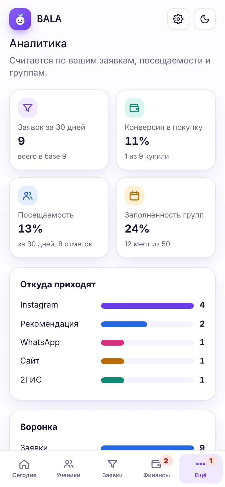
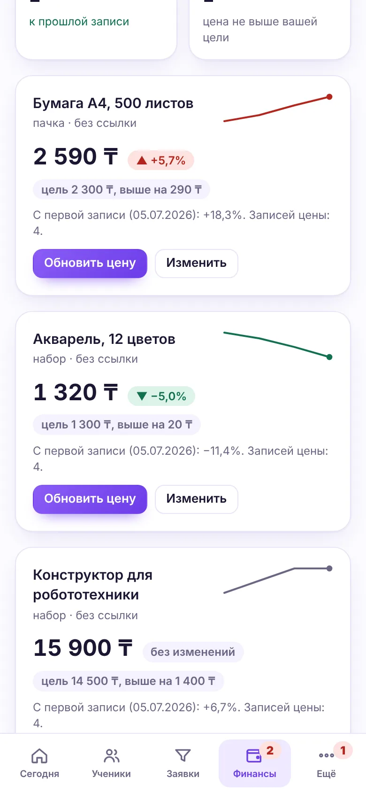
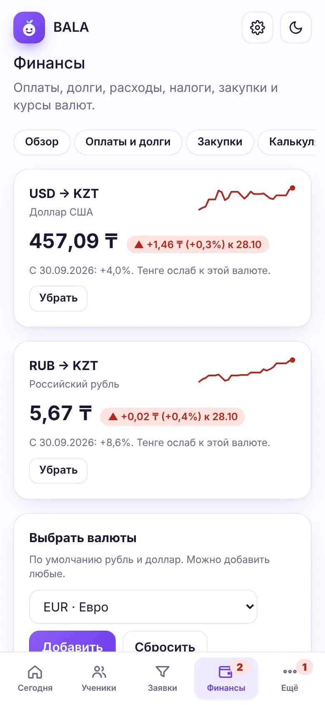

Детский центр под контролем. С телефона.
BALA CRM ведёт расписание, посещения, абонементы, оплаты Kaspi и наличными, заявки и задачи. Администратор тратит на учёт минуты, а владелец видит деньги и загрузку групп каждый день.


Тетрадка, WhatsApp и Excel заменяются одним приложением
Всё, что нужно детскому центру, и ничего лишнего
Мы взяли подход больших CRM: воронку, автоматические задачи, шаблоны сообщений, историю клиента. И переложили его на язык детского центра: группы, абонементы, родители, пропуски.
Расписание и журнал
Группы по дням недели, отметки одним нажатием или текстом: «все были, кроме Маши». Занятия сами списываются с абонемента.
Абонементы
Остаток занятий у каждого ребёнка, семейные скидки на второго и третьего, напоминание, когда пора продлевать.
Оплаты и долги
Kaspi, наличные со сдачей и переводы. Частичные оплаты, список должников и напоминание в WhatsApp одной кнопкой.
Заявки и воронка
Каждое обращение из Instagram, WhatsApp и звонков: от «Новая» до «Купил». Причины отказов попадают в аналитику.
Автоматизация
Правила «когда → что сделать». Новая заявка, пропуск, кончается абонемент — и задача с готовым сообщением уже стоит.
Сообщения по шаблонам
Имя родителя, ребёнка, долг и ссылка Kaspi подставляются сами. Отправка в WhatsApp, всё сохраняется в истории.
Задачи
Перезвонить, напомнить, проверить оплату. Сроки, ответственные, просроченные — на главном экране.
Аналитика
Откуда приходят клиенты, конверсия в покупку, почему отказываются, посещаемость, заполненность групп.
Финансы и налог
Выручка, расходы по категориям, прибыль, налог по вашей ставке, график за полгода, выгрузка в Excel для бухгалтера.
Как выглядит обычный день в BALA CRM
- Открыть «Сегодня»Занятия дня, задачи, просроченные дела и кто скоро продлевает.
- Ответить на заявкиПриложение уже поставило задачу и подставило шаблон ответа.
- Отметить группу«Все были, кроме Тимура». Занятия списаны, пропуск попал в задачи.
- Принять оплатуНаличные со сдачей или Kaspi. Долг закрыт, абонемент продлён.
- Сверить кассуСколько принято сегодня наличными и через Kaspi.


Приложение само напоминает, что сделать
Правила работают как цифровая воронка: событие → задача с готовым сообщением. Правила можно менять и добавлять свои.


Посмотрите приложение изнутри
Это настоящие экраны BALA CRM на демо-данных центра «Умный Зайка».






Подходит центрам любого направления
Развивающие центры
Много групп по возрасту, пробные занятия, семьи с несколькими детьми.
Языковые школы
Уровни, индивидуальные занятия, продления абонементов каждый месяц.
Спортивные секции
Посещаемость, пропуски, сезонные абонементы и форма.
Творческие студии
Рисование, музыка, танцы: материалы, закупки и выступления.
Робототехника и IT
Дорогие наборы, курсы валют для закупок, малые группы.
Подготовка к школе и логопеды
Индивидуальные занятия, заметки по ребёнку, связь с родителями.
Коротко о главном
Сколько стоит?
Версия для одного устройства бесплатна и включает все функции. Облачная версия для команды и нескольких устройств готовится, предварительные цены на странице Тарифы.
Где хранятся данные?
Сейчас только на вашем устройстве, в браузере. На сервер они не отправляются. Раз в неделю сохраняйте резервную копию в настройках. Подробнее на странице Как начать.
Как работает Kaspi?
Вы вставляете ссылку для оплаты из приложения Kaspi Pay. Она добавляется в счета и напоминания, которые уходят родителям в WhatsApp. Оплату администратор отмечает сам, когда приходит уведомление Kaspi.
Нужно ли что-то устанавливать?
Нет. BALA CRM открывается в браузере. На телефоне его можно добавить на экран «Домой», и он будет работать как приложение, в том числе без интернета.
Можно перенести данные из «Умного Зайки»?
Да. Если вы пользовались приложением «Умный Зайка» в этом же браузере, BALA CRM при первом запуске предложит перенести данные. Или восстановите их из файла резервной копии.
Попробуйте BALA CRM на своём центре
Бесплатно, без регистрации и карты. Откройте приложение, введите название центра и добавьте первую группу.